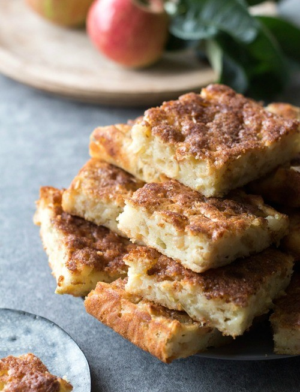

Pese õunad, eemalda südamikud ja lõika õunad väikesteks kuubikuteks (kui kasutad poeõunu, siis võid need esmalt koorida). Sega kuivained omavahel. Sulata või, pane tainakaussi. Lisa vähehaaval hapupiim, siis klopi juurde munad. Lisa kuivained ja õunakuubikud. Pane tainas ühtlase kihina võitatud 25x32 cm koogivormi (plaadikoogi jaoks tee tainast topeltkogus), puista peale demerara suhkrut ja soovi korral ka nt kaneeli. Küpseta 200kraadises ahjus helekollaseks (umbes 40-45 minutit). Veidi jahtunud koogile puista soovi korral tuhksuhkrut.
